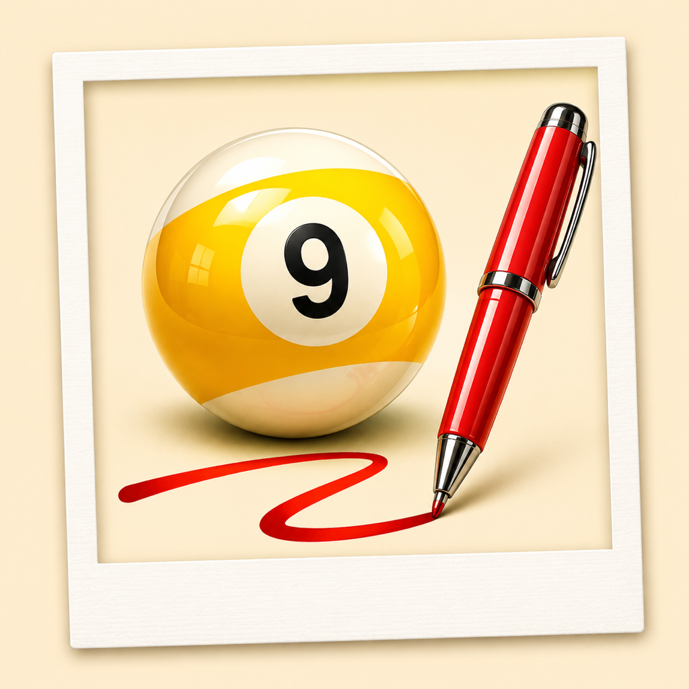
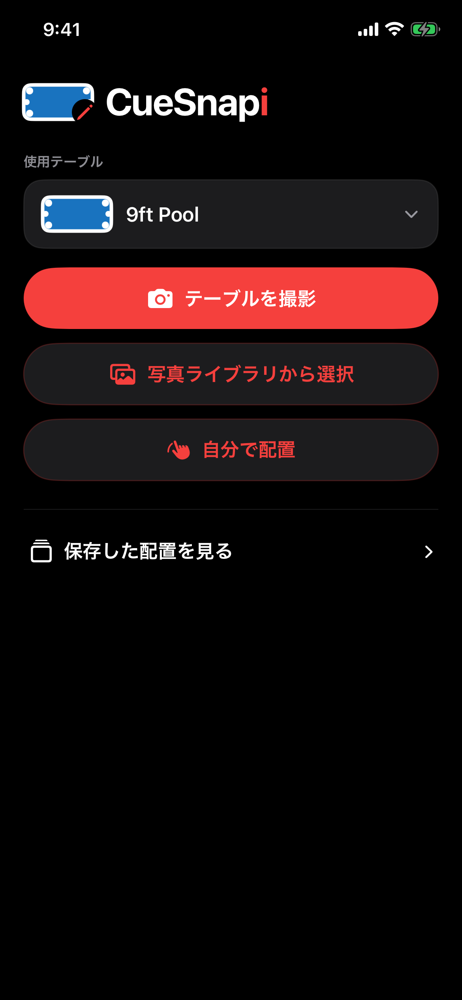

カメラでテーブルを撮影するか、写真ライブラリから選択します。
SNAP YOUR BILLIARDS. MAKE IT YOURS.

CueSnapi
撮って、描いて、残そう。
写真からボール配置をつくり、手で整えて保存。もう一度練習したい一局を、記憶だけに頼らず残せます。

HOW IT WORKS
撮影から、再現できる配置へ。
検出結果を確認し、球番号や位置を手動で整えられます。
完成した配置を端末内に保存し、あとから見返せます。
SNAP YOUR BILLIARDS. MAKE IT YOURS.

撮って、描いて、残そう。
写真からボール配置をつくり、手で整えて保存。もう一度練習したい一局を、記憶だけに頼らず残せます。

HOW IT WORKS
カメラでテーブルを撮影するか、写真ライブラリから選択します。
検出結果を確認し、球番号や位置を手動で整えられます。
完成した配置を端末内に保存し、あとから見返せます。